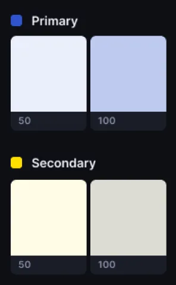
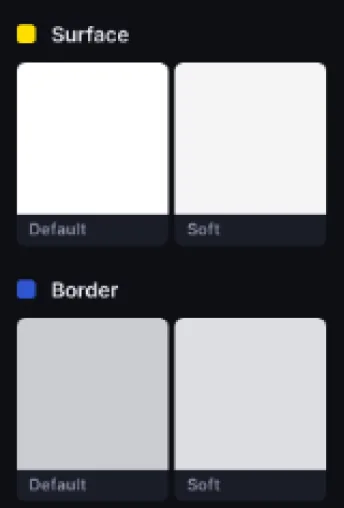
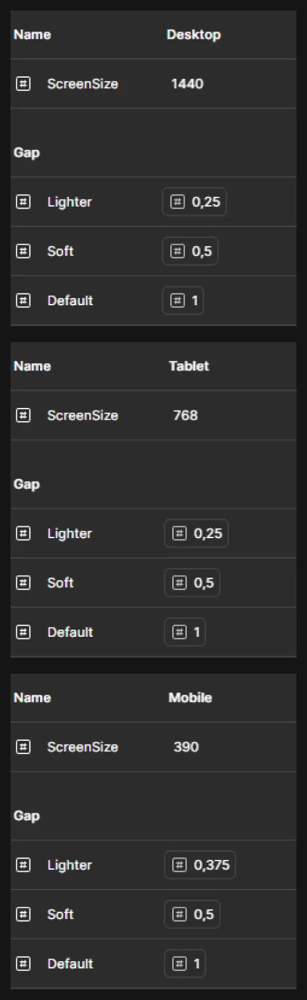
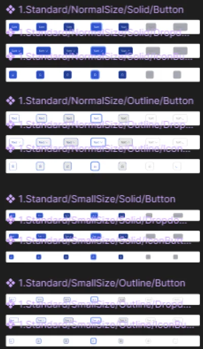
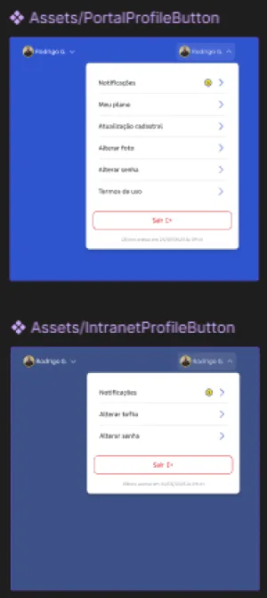
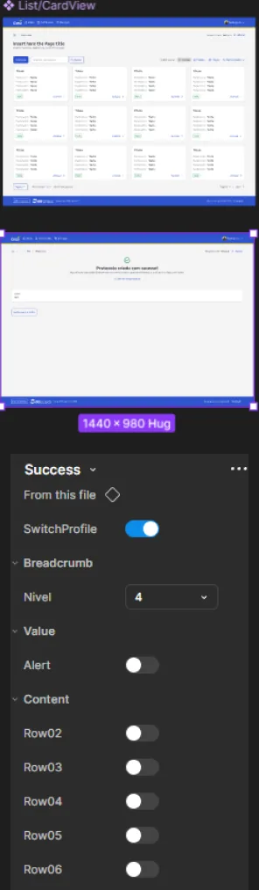
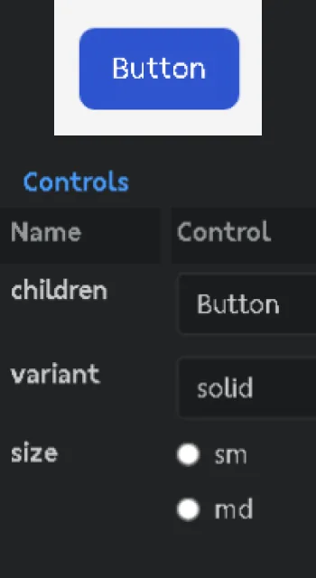

Harmony
A shared design system for CASSI's new projects, with existing products migrating gradually.
The case in five words
- Problem Five platforms kept separate Figma libraries, so tokens diverged and teams repeated component decisions.
- Decision Building on React Aria's accessible components let Harmony focus on CASSI's own visual language, content, and interactions.
- Decision One shared library became the common reference, with shared governance and defined exceptions.
- Trade-off New projects start on Harmony; existing products migrate gradually, so full adoption is still in progress.
- Result Harmony is now the foundation for new projects at CASSI.
Separate libraries. Repeated decisions.
CASSI's five platforms had separate Figma libraries and no shared governance. That fragmentation showed up in everyday design work:
- Library updates had to be maintained separately across five platforms.
- Tokens and patterns diverged as each library followed a different update cycle.
- Teams revisited component decisions and repeated design work across products.
Leading design, working with development.
I led the design of Harmony, from organizational alignment and governance to components, tokens, and variables. The development team implements the React library in partnership with me. I continue to evolve existing components and design new ones, working with the team to keep the system up to date.
Building a shared foundation.
We chose a shared library as the common reference for component decisions. Shared governance and defined exceptions allow Harmony to evolve with product needs.
Primitive scales, semantic roles, and responsive variables describe related layers of that foundation.
Primitive color scales
Selected steps from the Primary blue and Secondary yellow scales illustrate a shared color vocabulary for the foundation.

Semantic roles by use
Semantic names describe how color is used. Surface and Border group those uses, with roles such as Default and Soft within each group. This adds intent to the primitive color vocabulary.

Responsive variables
Desktop, Tablet, and Mobile modes adapt the foundation to different screen sizes. Compare ScreenSize and the Gap values across these modes. The source also groups padding, radius, and icon variables, connecting the shared reference to responsive layout decisions.

Applying the shared patterns.
Accessibility and content guidance sit alongside visual tokens and interaction states. Contrast, component semantics, and error messages remain ongoing component requirements, with design and development addressing their respective parts.
Button variants, sizes, and states
Compare the Standard button's solid and outline variants, with NormalSize above SmallSize. Text, dropdown, and icon-only examples show different state treatments through changes in color, emphasis, and outlines. These selections show how shared foundations inform component decisions.

Navigation across contexts

Composing page templates
Templates compose shared patterns into page layouts. Compare the card-based list with the selected success layout, then inspect its profile switch, breadcrumb level, and content-row options in the design panel. The layouts keep a common navigation and page structure while exposing configuration for different content.

Button properties in Storybook
The Button preview sits alongside named properties: children supplies the label, variant shows solid, and size lists sm and md. Storybook provides a reference for documenting components and discussing their implementation with development.
React and Next.js were chosen with long-term maintenance and hiring in mind. The intent was to give development a shared technical foundation as new projects adopt Harmony and existing products migrate. I lead design and the ongoing evolution of components; the development team implements the React library in partnership with me.
React Aria accelerated component delivery significantly, especially for accessibility criteria. Building fully accessible components from scratch is unrealistic for most teams. By leveraging a battle-tested library, we eliminated solved problems from Harmony's roadmap and focused energy on decisions specific to CASSI: visual language, content standards, and interaction patterns.

Adopted in new projects. Evolving with the team.
Harmony is now the foundation for new projects at CASSI. Existing products are being migrated gradually, so adoption across the ecosystem remains an ongoing effort.
The work continues through updates to existing components and the design and implementation of new ones. I work with the development team to keep the system aligned as it evolves.
Prototyping with AI, exploring the path to React.
I am working with the development team to explore AI-assisted process automation. We are building libraries and skills to support functional HTML, CSS, and JavaScript prototypes for user validation.
We are also developing and evaluating a way to translate those prototypes into Harmony's React components. This work is still in development.
Have a project in mind?